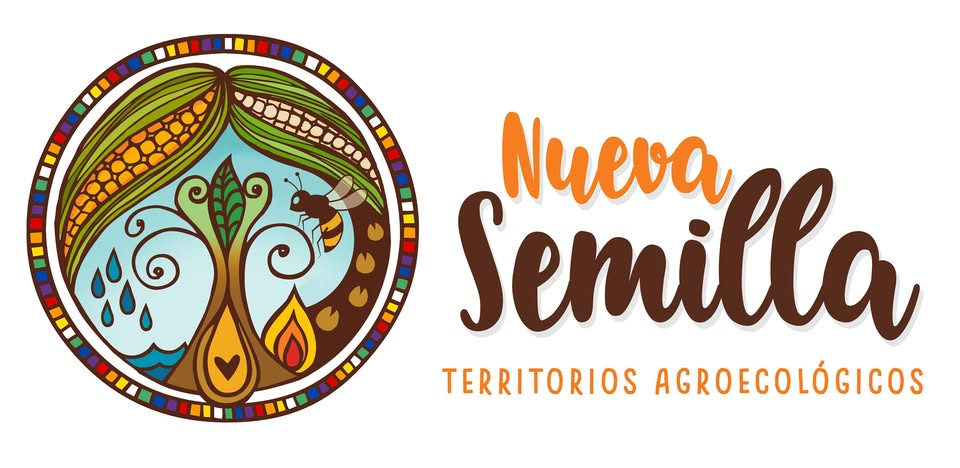

As. Agroecológico
Diseño, transición y/o regeneración de sistemas productivos en armonía con la tierra.

TIERRA · COMUNIDAD · FUTURO
Una red de saberes y experiencias para acompañar la transición hacia comunidades rurales más sanas, vivas y regenerativas.
Explorar la Nueva Semilla ↓ACOMPAÑAMIENTO
Conocimientos situados y acompañamiento para proyectos, territorios y personas.
Diseño, transición y/o regeneración de sistemas productivos en armonía con la tierra.
Salud mental rural y ecoansiedad.
DEL CAMPO A LA MESA
Encontrá alimentos con historia, cercanía y cuidado.
TERRITORIOS CONECTADOS
Explorá iniciativas y comunidades a través de estos recursos coordinados por Claudio Sarmiento.
NUESTRA HISTORIA
Una comunidad que comparte aprendizajes, preguntas y caminos posibles.
VOCES Y REGISTROS
Entrevistas y materiales para conocer la experiencia de Nueva Semilla en primera persona.
Webinar con Luciana Sagripanti y Darío Colaneri.
Ver entrevista ↗ YOUTUBE · 02Conversación sobre la apuesta de la universidad por la agroecología.
Ver entrevista ↗ ARCHIVO · 03Nota “Alimentos sanos y diversos”, publicada por La Tinta.
Abrir archivo ↗ ARCHIVO · 04Nota de Noticias UNSAM sobre el encuentro de productores agroecológicos.
Abrir archivo ↗ ARCHIVO · 05La experiencia de Luciana y la transición agroecológica del tambo a la cría.
Abrir archivo ↗MEMORIA COLECTIVA
Un recorrido audiovisual por la historia del grupo.
PARA SEGUIR PROFUNDIZANDO
Documentos y publicaciones del grupo para consulta y descarga.